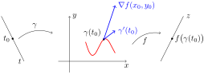
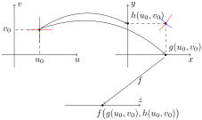

Nesta seção vamos apresentar a derivação da composta de uma função de duas variáveis com uma curva plana e, como consequência, maneiras de derivar outras compostas e também derivadas em direções que não são paralelas aos eixos coordenados, sempre ilustrados com exemplos e contra-exemplos.
Começamos com uma definição e uma lema técnico que permitirá enunciar o resultado principal desta seção.
DefiniçãoA.6.1.(Vetor Gradiente).
Seja \(f\colon A\subseteq\R^2\to\R\) uma função que admite derivadas pariciais em \((x_0,y_0)\in A\text{.}\) O gradiente de \(f\) em \((x_0,y_0)\) é o vetor
Seja \(f\colon A\subseteq\R^2\to\R\) uma função diferenciável em \((x_0,y_0)\text{,}\) então existe \(\phi\colon
A\subseteq\R^2\to\R\text{,}\) contínua em \((x_0,y_0)\) tal que
O valor de \(\phi\) em \((x_0,y_0)\) deve ser tal que a função seja contínua nesse ponto, ou seja, \(\phi(x_0,y_0)=\lim\limits_{(x,y)\to (x_0,y_0)}
\phi(x,y)\text{.}\) Fazendo \(x=x_0+h\) e \(y=y_0+k\text{,}\) vemos que este limite é nada mais que o limite da Definição A.4.7, que é zero aqui, uma vez que \(f\) é diferenciável em \((x_0,y_0)\text{.}\)
Note inicialmente que as duas primeiras parcelas do lado direito na expressão em destaque são exatamente as parcelas independentes de \(z\) na equação do plano tangente gráfico de \(f\) em \((x_0,y_0)\text{.}\)
Com isto, este enunciado é uma generalização natural do que acontece com funções de uma variável, quando olhamos para o polinômio de Taylor de ordem 1: o erro na aproximação, ali pela reta tangente, aqui pelo plano tangente, dá um erro que tende a zero "mais rapidamente" do que \((x,y)\) se aproxima de \((x_0,y_0)\text{.}\)
TeoremaA.6.4.(Regra da Cadeia).
Sejam \(f\colon A\subseteq\R^2\to\R\) uma função diferenciável em \((x_0,y_0)\) e \(\gamma\colon
I\subseteq\R\to\R\) derivável em \(t_0\in I\) tal que \(\gamma(t_0)=(x_0,y_0)\text{.}\) Então \(f\circ\gamma \) é derivável em \(t_0\) e
pois \(\lim\limits_{t\to
t_0}\phi\big(\gamma(t)\big)=\phi(x_0,y_0)=0\text{,}\)\(\lim\limits_{t\to t_0}\Big\|\dfrac{\gamma(t)-\gamma(t_0)}
{t-t_0}\Big\|=\big\|\gamma'(t_0)\|\) e \(\dfrac{|t-t_0|}{t-t_0}\) é limitado.
NotaA.6.5.
Uma interpretação para a Regra da Cadeia apresentada acima é que a derivada, ou taxa de variação, de \(f\) ao longo de uma curva está ligada com a projeção ortogonal do gradiente de \(f\) sobre o vetor velocidade da curva.

FiguraA.6.6.A composta \(f\circ\gamma\text{.}\)
Além de seu valor no cálculo de derivadas de compostas, a Regra da Cadeia é uma poderosa ferramenta para mostrar que uma função não é diferenciável. Veja como no exemplo abaixo:
ExemploA.6.7.
A função \(f(x,y)=\begin{cases}
\dfrac{x^3}{x^2+y^2},&(x,y)\neq (0,0);\\ \hfill 0,&
(x,y)=(0,0)\end{cases}\) não é diferenciável na origem. De fato, \(\gamma(t)=(t,t)\text{,}\) é uma curva derivável tal que \(\gamma(0)=(0,0)\) e \(\gamma'(0)=(1,1)\text{.}\) Temos, calculando explicitamente, que
No Exercício 1.5.5 calculamos as derivadas parciais de \(f\text{,}\) obtendo \(\nabla
f(0,0)=(1,0)\text{.}\) derivadas parciais em \((0,0)\text{,}\) mas não é contínua em \((0,0)\text{.}\) Assim,
Se \(f\) fosse derivável na origem, a igualdade deveria valer para qualquer curva nas condições do enunciado do Teorema A.6.4
No caso especial em que a curva considerada é uma curva de nível da função temos um resultado bastante interessante:
CorolárioA.6.8.(\(\nabla f\perp f^{-1}(c)\)).
Sejam \(f\colon A\subseteq\R^2\to\R\) uma função diferenciável e \(\gamma\colon I\subseteq\R\to\R^2\text{,}\) que é uma curva derivável tal que \(\mathrm{Im}\gamma\subset f^{-1}(c)\) (a curva parametriza parte de uma curva de nível de \(f\)). Então,
Este é o famoso resultado que se traduz na frase "O gradiente é perpendicular às curvas de nível.".
Demonstração.
Basta observar que, nas condições do enunciado, temos \((f\circ\gamma)(t)=c\in\R\) e portanto \((f\circ\gamma)'(t)=0\) para todo \(t\in I\text{.}\) O resultado segue disto aplicado ao Teorema A.6.4.
ExemploA.6.10.
Seja \(f(x,y)=x^2+y^2\text{,}\) que é diferenciável em todo seu domínio. Sua curva de nível \(c<0\) é um círculo centrado na origem e de raio \(\sqrt{c}\text{,}\) que pode ser parametrizado por \(\gamma(t)=\sqrt{c}(\cos t, \sin t)\text{,}\)\(t\in
[0,2\pi]\text{.}\) Como \(\nabla f(x,y)=(2x,2y)\) e \(\gamma'(t)=\sqrt{c}(-\sin t, \cos t)\text{,}\) temos
FiguraA.6.11.O gradiente ao longo de uma curva de nível.
Note que nessas condições a projeção do gradiente na direção tangente à da curva é nula, ou seja, que caminha ao longo de uma curva de nível "não sente" as derivadas de \(f\) (e por isso ela é constante ao longo dessa trajetória.
CorolárioA.6.12.
Sejam \(g,h\colon B\subseteq\R^2\to\R\) funções diferenciáveis em \((u_0,v_0)\) e \(f\colon A\subseteq\R^2\to\R\) diferenciável em \(\big(g(u_0,v_0),h(u_0,v_0)\big)\text{.}\) Então a função
Omitindo os pontos de aplicação (tenha cuidado ao fazer isso!) e, escrevendo \(x(u,v)=g(u,v)\text{,}\)\(y(u,v)=h(u,v)\) e (abusando muito!) \(f(u,v)=f\big(g(u,v),h(u,v)\big)\text{,}\) temos uma notação mais sintética para as expressões acima:
Lembrando que as derivadas parciais deixam uma das variáveis fixadas, podemos aplicar o Teorema A.6.4 a cada uma das curvas indicadas no plano \(Oxy\) da figura abaixo.

FiguraA.6.13.A composta \(f\circ\gamma\text{.}\)
Considerando então a curva \(\beta(u)=\big(g(u,v_0),h(u,v_0)\big)\text{,}\) para a qual \(\beta'(u)=\big(g_u(u,v_0),h_u(u,v_0)\big)\) e aplicando a Regra da Cadeia do Teorema A.6.4, temos
onde \((x_0,y_0)=\big(g(u_0,v_0),h(u_0,v_0)\big)\text{.}\)
Procedendo de maneira análoga para a curva \(\gamma(v)=\big(g(u_0,v),h(u_0,v)\big)\text{,}\) obtemos a expressão para a derivada em \(v\) de \(F\text{,}\) no ponto \((u_0,v_0)\text{.}\)
Podemos, naturalmente, calcular as derivadas segundas de tais compostas. Para tanto, basta lembrar que vamos precisar dos gradientes de \(f_x\) e \(f_y\text{:}\)
Assim, com as hipóteses de derivadas parciais de \(f\) sendo diferenciáveis e \(\gamma\) admitindo segunda derivada nos respectivos pontos, e escrevendo \(\gamma(t)=\big(x(y),y(t)\big)\text{,}\) temos, com a Regra da Cadeia, que
Assim como usamos o Teorema A.6.4 para provar o Corolário A.6.12, é possível usar as expressões acima para calcular as derivadas parciais de segunda ordem de compostas do tipo \(f\big(g(u,v),h(u,v)\big)\text{.}\) Fazemos isso no Exercício 1.6.6.
DefiniçãoA.6.15.(Derivada Direcional).
Sejam \(f\colon A\subseteq\R^2\to\R\) uma função e \(\vec{v}\in\R^2\) um vetor unitário. A derivada direcional de \(f\text{,}\) na direção de \(\vec{v}\text{,}\) em \((x_0,y_0)\) é dada por
No caso especial em que \(\vec{v}=\vec{e_1}=(1,0)\) ou \(\vec{v}=\vec{e_2}=(0,1)\text{,}\) recuperamos, respectivamente, \(f_x(x_0,y_0)\) e \(f_y(x_0,y_0)\text{.}\) A interpretação geométrica é análoga à feita na Nota A.4.2, com cortes por planos não paralelos aos eixos \(Ox\) ou \(Oy\text{.}\)
Quando a função \(f\) é diferenciável, o vetor gradiente determina completamente as derivadas direcionais:
ProposiçãoA.6.17.
Sejam \(f\colon A\subseteq\R^2\to\R\) uma função diferenciável em \((x_0,y_0)\) e \(\vec{v}\) um vetor unitário. Então
Basta parametrizar um segmento de reta que passa por \((x_0,y_0)\) e tem a direção de \(\vec{v}\text{:}\)\(\gamma(t)=(x_0,y_0)+t\vec{v}\text{,}\)\(t\in
(-\epsilon,\epsilon)\) (com \(\epsilon > 0\)). Assim,
Se \(\gamma:I\subseteq\R\to\R^2\) é qualquer curva derivável em \(t_0\in I\) tal que \(\gamma(t_0)=(x_0,y_0)\) e \(\gamma'(t_0)=\vec{v}\text{,}\) então
ou seja, a derivada de \(f\) ao longo de \(\gamma\) em \(t_0\) depende apenas de \(\gamma'(t_0)\text{.}\) Em outras palavras, se duas curvas passam por um mesmo ponto do plano e têm o mesmo tangente nesse ponto, então qualquer função diferenciável terá a mesma derivada quando composta com essas curvas naquele ponto.
NotaA.6.19.
A existência de derivadas direcionais em todas as direções não garante diferenciabilidade. Por exemplo, vimos que a função do Exercício 1.5.5 não é diferenciável na origem, mas admite derivadas direcionais nesse ponto em todas as direções: se \(\vec{v}=(a,b)\text{,}\) com \(a^2+b^2=1\text{,}\) temos:
Em vista da fórmula na Proposição A.6.17 acima, sabemos a derivada direcional de qualquer função diferenciável deve depender linearmente das coordenadas da direção em que estamos derivando.
ProposiçãoA.6.20.Direções de crescimento máximo.
Se \(f\colon A\subseteq\R^2\to\R\) uma função diferenciável em \((x_0,y_0)\text{,}\) então a direção em que \(f\) tem a maior taxa de variação nesse ponto é a de \(\nabla f (x_0,y_0)\text{.}\)
Demonstração.
Basta olhar para a definição geométrica do produto escalar em \(\R^2\text{:}\)
Como \((x_0,y_0)\) está fixado, \(\|\nabla
f(x_0,y_0)\|\|\vec{v}\|\) é uma constant e \(\|\vec{v}\|=1\text{.}\) Desta forma o valor da derivada direcional depende somente \(\theta\) e assumirá seu máximo, quando \(\theta=0\text{,}\) ou seja, quando \(\vec{v}=\dfrac{\nabla
f(x_0,y_0)}{\|\nabla f(x_0,y_0)\|}\)
O vídeo abaixo ilustra uma aplicação interessante da Proposição A.6.20
FiguraA.6.21.Trajetórias ortogonais a curvas de nível.
Fechamos esta revisão com uma curiosidade:
FatoA.6.22.Outras direções.
Podemos generalizar um pouco o resultado acima: se uma função é diferenciável em \((x_0,y_0)\text{,}\) basta conhecer as derivadas direcionais nesse ponto, em duas direções linearmente independentes, para determinarmos a derivada direcional em \((x_0,y_0)\) em qualquer direção. Para tanto, se \(\vec{u}\) e \(\vec{v}\) são vetores unitários que definem tais direções, temos que \(\big\{\vec{u},\vec{v}\big\}\) é uma base de \(\R^2\) e, portanto
Mais frequentemente, temos as coordenadas de \(\vec{u}\) e \(\vec{v}\) na base canônica, digamos \(\vec{u}=(a,b)\) e \(\vec{v}=(c,d)\text{.}\) Procedendo de maneira inversa, temos um sistema para determinar o gradiente de \(f\) (e consequentemente todas as derivadas direcionais):
cujas soluções são dadas invertendo-se a matriz \(\begin{pmatrix}
a&b\\ c&d \end{pmatrix}\) de coeficientes, o que é possível se e somente se os vetores \(\vec{u}\) e \(\vec{v}\) são linearmente independentes.